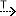

The creation of followings diagrams is possible only if Traceability Capability is enabled.
To enabled such Capability, perform:
| Trace |
 |
Create a Generic Trace from PropertyValueGroup to an element. |
| Nodes | Creates or delete graphical objects on the diagrams corresponding to existing Elements. Removing a Element graphical object from the diagram does not delete the Element from the model. This tool does not modify the semantic model. | |
| Show Related Elements | Show elements that are connected through traces. | |
| Show All Related Elements | Show all elements that are connected through traces directly or indirectly. |
This diagram provides the same tools as Traceability Diagram.